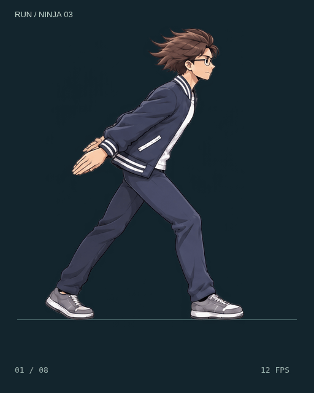
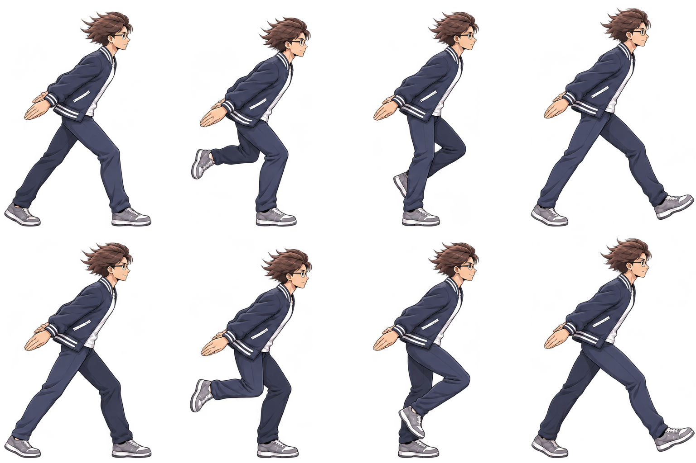

DỊ MÔN / NINJA RUN TRIAL 03
Chạy ninja — nhịp thân & độ nảy tay.
Vai và thân nhấp nhô nhẹ theo nhịp tiếp đất–đạp sau. Hai tay giữ về sau, khuỷu và cổ tay có độ nảy; tóc và gấu áo theo sau chuyển động thân. Chọn 01–08 để kiểm tra từng khung.



Spritesheet 4 × 2
